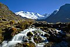

HUANCAYA
Inicio 5:00 AM - Retorno a Huancayo - FIN 9:00 PMLUGARES A VISITAR
- Cañón de Uchco
- Plaza de Huancayo
- Mirador Cabracancha
- Puente Colgante de Cabracancha
- Puente Colonial
- Mirador de Carhuayno o mirador de la Laguna Huallhua (opcional)
- Trekking de 25 minutos de bajada hasta la Laguna de Huallhua
- Laguna Huallhua
- Paseo en bote a las Cataratas de Huallhua
- Cabañas de Huallhua
- Trekking de 45 minutos de subida hasta la movilidad
INCLUYE
- Transporte: Servicio compartido
- Guía de turismo: En español (Para otros idiomas, consultar)
NO INCLUYE
- Tickets de Ingreso: Tomas S/.2.00, Pique Cocha S/.5.00, Huancaya S/.10.00, Paseo en Bote a las Cataratas de Huallhua S/.20.00
- Alimentación
- Bebidas y snacks
- Regalos, souvenirs, compras personales
- Propinas por servicio (Opcionales, voluntarias)

MONUMENTAL JAUJA
Inicio 5:00 AM - Retorno a Huancayo - FIN 9:00 PMLUGARES A VISITAR
- Orcotuna: Santuario de la Virgen de Cocharcas
- Sala de Exposición de la Danza de la Huaconada
- Formaciones Geológicas de Cóndor Muyuna: Trekking de 35 minutos de ida y vuelta
- Sincos: Planta Procesadora de Agave
- Paseo en Bote en la Laguna de Paca
- Plaza de Armas de Jauja
- Capilla de Cristo Pobre
- Planta Lechera de Apata
INCLUYE
- Transporte turístico: Servicio compartido
- Guía profesional: En español
NO INCLUYE
- Tickets de Ingreso: Sala de Exposición de la Huaconada S/.5.00, Cóndor Muyuna S/.2.00, Paseo en Bote en Laguna de Paca S/.10.00
- Alimentación
- Bebidas y snacks
- Gastos personales
- Propinas por servicio

ARTESANÍA
Inicio 5:00 AM - Retorno a Huancayo - FIN 9:00 PMLUGARES A VISITAR
- Hualhuas: Taller Artesanal y Textil
- San Jerónimo de Tunán: Taller Artesanal del Oro y la Plata
- Mirador de Piedra Parada: Estatua de la Virgen Inmaculada Concepción
- Helados Artesanales de Concepción
- Ingenio: Lugar para almorzar
- Convento de Santa Rosa de Ocopa: La visita al museo es de 9:00 a.m. a 11:15 a.m. y de 3:00 p.m. a 5:15 p.m. (Todos los días excepto los martes)
INCLUYE
- Transporte turístico: Servicio compartido
- Guía de turismo: En español (Para otros idiomas, consultar)
NO INCLUYE
- Tickets de Ingreso: Estatua de la Virgen Inmaculada Concepción S/.5.00, Centro Piscícola El Ingenio S/.3.00, Museo del Convento de Santa Rosa de Ocopa S/.10.00
- Alimentación
- Bebidas y snacks
- Regalos, souvenirs, compras personales
- Propinas por servicio (Opcionales, voluntarias)

ARQUEOLÓGICO
Inicio 5:00 AM - Retorno a Huancayo - FIN 9:00 PMLUGARES A VISITAR
- [Agregar sitio arqueológico 1]
- [Agregar sitio arqueológico 2]
- [Agregar sitio arqueológico 3]
INCLUYE
- Transporte turístico: Servicio compartido
- Guía profesional: En español
NO INCLUYE
- Tickets de Ingreso a los complejos arqueológicos
- Alimentación
- Bebidas y snacks
- Regalos, souvenirs, compras personales
- Propinas por servicio

CAÑÓN DE UCHCO
Inicio 5:00 AM - Retorno a Huancayo - FIN 9:00 PMLUGARES A VISITAR
- Vista panorámica del Cañón de Uchco
- [Agregar lugar específico de la ruta 2]
- [Agregar lugar específico de la ruta 3]
INCLUYE
- Transporte turístico: Servicio compartido
- Guía profesional: En español
NO INCLUYE
- Tickets de Ingreso de la zona
- Alimentación
- Bebidas y snacks
- Gastos personales

NEVADO HUAYTAPALLANA
Inicio 5:00 AM - Retorno a Huancayo - FIN 9:00 PMLUGARES A VISITAR
- Abra de Huaytapallana
- Laguna Lazuntay
- Trekking al pie del nevado
- [Agregar lugar específico de la ruta 4]
INCLUYE
- Transporte turístico: Servicio compartido
- Guía profesional de alta montaña
NO INCLUYE
- Tickets de Ingreso a la comunidad/área protegida
- Alimentación
- Bebidas (se recomienda llevar agua y snacks)
- Alquiler de equipo de caminata extra